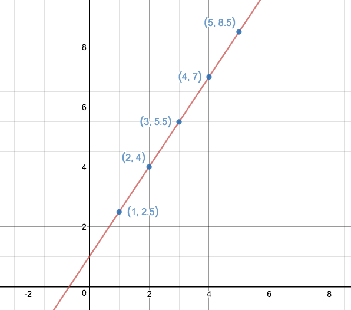
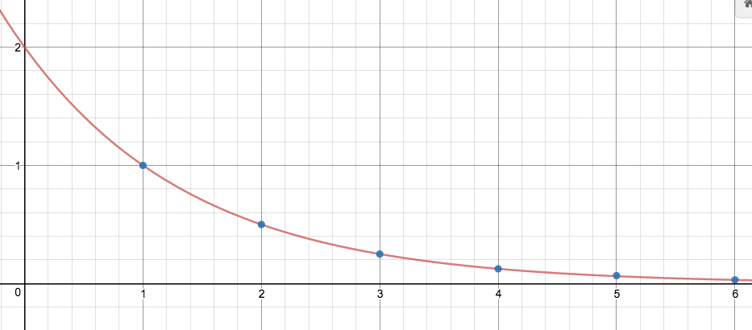

Essentially you have already worked extensively with arithmetic sequences, but you may not have realized it. Arithmetic sequences are a discrete version of linear functions. If you take any linear function and restrict the domain to the positive integers, you get an arithmetic sequence. The figure below illustrates the process, where the y-values of the blue points are the first five terms of the sequence defined as $a_n=\frac{3}{2}n+1$. The sequence corresonds with the linear function $y=\frac{3}{2}x+1$.

You can recognize an arithmetic sequence by looking at consecutive terms and testing for a common difference. For example the sequence above has a common difference $d=\frac{3}{2}$. To uniquely specify an arithmetic sequence you need only provide the first term and the common difference.

Find the general term of an arithmetic sequence given $a_1=10$ and $d=6$. We know as we increment $n$, $a_n$ increases by 6, and we also know that the sequence starts at 10. This is similar to slope and knowing the point $(1,10)$, so we see that an equation of the form $a_n=10 + 6(n-1)$ describes the sequence we are looking for.
More generally, if an arithmetic sequence has a first term $a_1$ and a common difference $d$ then the general term of this sequence is given by $a_n=a_1 + d(n-1)$.
The function analogue of a geometric sequence is the exponential function. Where the arithmetic sequence is defined by its common difference, the geometric sequence is defined by a common ratio. Again, each exponential function when you restrict its domain to the positive integers defines a geometric sequence. Keeping with the analogy, the function $f(x)=(\frac{1}{2})^x$ gives the sequence $g_n=(\frac{1}{2})^{n-1}$ whose first terms are: $\{1, 1/2, 1/4, 1/8, 1/16, 1/32, 1/64, \ldots\}$. The figure below shows this relationship pictorially.

You can recognize a geometric sequence by looking at consecutive terms and checking for a common ratio. This should feel familiar as it is the same process we used to check if our data was approximately exponential.
Find the general term of a geometric sequence given $g_1=3$ and $r=5$. We know as we increment $n$ $g_n$ is multiplied by 5. Our general term should resemble the form of the exponential with base 5 and starting value 3, so we see that an equation of the form $g_n=3(5)^{n-1}$ gives the sequence we want.
More generally, a geometric sequence with first term $g_1$ and common ratio $r$ has general term $g_n=g_1(r)^{n-1}$.